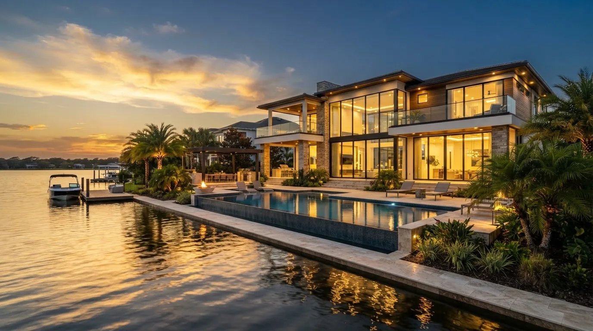
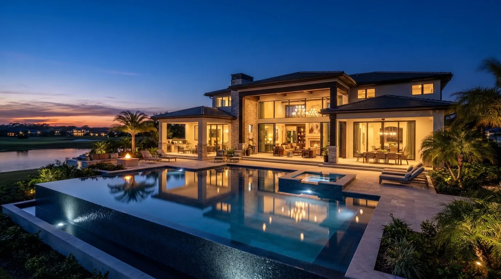

Conoce Windermere
Explora su ubicación, sus opciones de vivienda y los servicios que definen el enclave lacustre más discreto y exclusivo de Orlando.
Posición privilegiada en el suroeste de Orlando
Windermere conserva la calma de un pueblo lacustre sin renunciar a la conectividad: Conroy-Windermere Road enlaza en minutos con Dr. Phillips, la SR-429 y la I-4, acercando a sus residentes a Restaurant Row, los parques temáticos y los centros de negocio.
Dr. Phillips y Restaurant Row
Vía Conroy-Windermere Rd y Dr. Phillips Blvd
Autopistas SR-429 e I-4
Conexión con los parques temáticos y el corredor turístico
Downtown Orlando
Vía I-4 o SR-408
Tiempos de trayecto orientativos desde el centro de Windermere, sujetos a condiciones de tránsito en tiempo real.
Opciones de vivienda en Windermere
Arquitectura a medida sobre parcelas arboladas, residencias frente al agua y fincas en comunidades cerradas con vigilancia, pensadas para la privacidad.
 A MEDIDA
A MEDIDA
Residencias Custom
Casas unifamiliares diseñadas a medida sobre parcelas amplias y arboladas, con robles centenarios, cocinas de chef, piscina privada y terrazas cubiertas para la vida en familia.
 FRENTE AL LAGO
FRENTE AL LAGO
Residencias Waterfront
Arquitectura contemporánea de grandes ventanales orientada al agua, con piscina infinita, embarcadero propio y, según el lago, acceso navegable a la cadena Butler.
 COMUNIDAD CERRADA
COMUNIDAD CERRADA
Mansiones en Enclave
Fincas de gran formato en comunidades con acceso controlado y vigilancia, clubes de golf de campeonato, marinas privadas y servicios para residentes que priorizan la discreción.
Servicios, lagos y vida al aire libre
Un entorno de ritmo sereno donde la vida náutica, el golf y la naturaleza conviven con la oferta gastronómica y los servicios de Dr. Phillips.

Cadena de Lagos Butler
El alma de Windermere: una cadena de lagos interconectados de aguas claras, ideal para navegar, practicar deportes acuáticos o contemplar el atardecer desde un muelle privado.
Downtown Windermere
Un centro de escala íntima, con calles arboladas, pequeños comercios, cafés y el ambiente tranquilo de un pueblo que conserva su identidad frente al crecimiento de la región.
Clubes de Golf Privados
Country clubs y campos de campeonato dentro de comunidades cerradas, con casa club, restaurantes y una agenda social activa para socios y residentes.
Dr. Phillips y Restaurant Row
A pocos minutos se concentra una de las ofertas gastronómicas más reconocidas de Orlando, junto a centros comerciales, servicios médicos y opciones culturales.
Parques y Senderos
Calles arboladas, parques junto al lago y la cercanía al West Orange Trail invitan al ciclismo, al trote y a los paseos en familia entre robles y reservas naturales.
Colegios públicos y privados de referencia
Windermere pertenece al distrito de Escuelas Públicas del Condado de Orange (OCPS) y está rodeado de colegios privados e independientes en el suroeste de Orlando, un factor decisivo para muchas familias que eligen la zona.
Primaria, secundaria y preparatoria asignadas según el domicilio exacto.
Opciones independientes en la zona y alrededores, con admisión propia.
Aviso Informativo sobre Zonificación Escolar
Las zonas de asignación escolar y cupos específicos en el Condado de Orange son administrados de forma exclusiva por las autoridades de OCPS y están sujetos a rezonificaciones periódicas.
Propiedad destacada en Windermere

The Isleworth Villa
Isleworth Sanctuary Enclave, Windermere, FL 34786
Modelo Signature frente al lago con muelle y elevador de embarcación, cava climatizada, salón de entretenimiento y garaje para 3 vehículos con cargador EV, en una reserva arbolada con acceso vigilado.
Preguntas frecuentes sobre vivir en Windermere
Buena parte de las comunidades cerradas de Windermere cuentan con una asociación de propietarios (HOA) que cubre la seguridad y el control de acceso, el mantenimiento de áreas comunes y, en algunos casos, muelles o instalaciones compartidas. Las cuotas varían notablemente entre un vecindario tradicional y un enclave con vigilancia y club privado, y algunas urbanizaciones más recientes pueden incluir además un Distrito de Desarrollo Comunitario (CDD). Es fundamental revisar los documentos de cada propiedad para conocer el desglose exacto antes del cierre.
No necesariamente. La cadena Butler está formada por varios lagos conectados entre sí, pero otros lagos de la zona no se comunican con ella, y la profundidad, los canales y la normativa sobre muelles y embarcaciones pueden variar. Antes de presentar una oferta conviene confirmar el acceso real por agua, los permisos del muelle existente y cualquier restricción de la comunidad o del condado.
La zona atrae a familias que priorizan la privacidad, el espacio y la vida al aire libre, así como a ejecutivos, empresarios y deportistas que buscan discreción a poca distancia de los centros de negocio y los parques temáticos. También es habitual el comprador internacional que busca una residencia principal o secundaria en un entorno lacustre consolidado.
Otras zonas recomendadas para contrastar
Lake Nona
Contraste contemporáneo frente a la serenidad de Windermere: comunidad planificada, Medical City, senderos conectados y cercanía al aeropuerto MCO.
 TRADICIÓN • LIFESTYLE
TRADICIÓN • LIFESTYLE
Winter Garden
Vecina natural de Windermere en el oeste de Orlando: centro histórico, Plant Street Market, el célebre West Orange Trail y comunidades nuevas.
¿Es Windermere el entorno adecuado para su residencia o patrimonio?
Permítanos proporcionarle un análisis comparativo de propiedades frente al lago, inventario off-market y asesoramiento discreto adaptado a sus requerimientos de inversión o estilo de vida familiar.